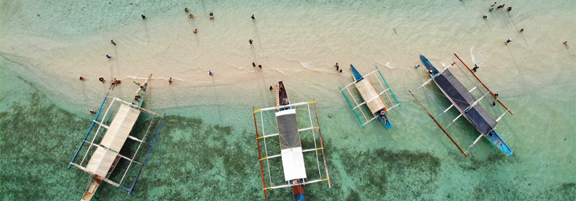

Learn About Me

B-Photography is represented by a dedicated and talented individual with professional working experience in photography. This website is managed and run by the founder of B-Photography, Bill Francis Martillano, a BSI/T student and currently studying at Marinduque State College.